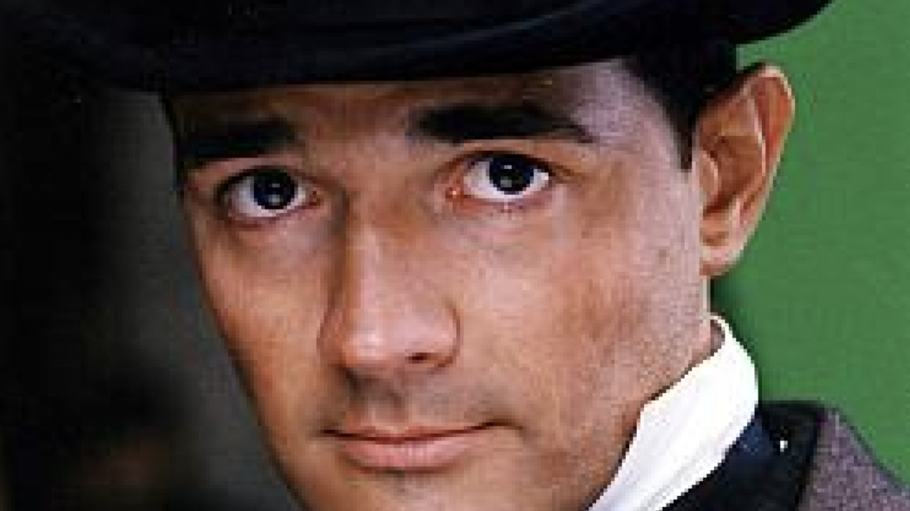
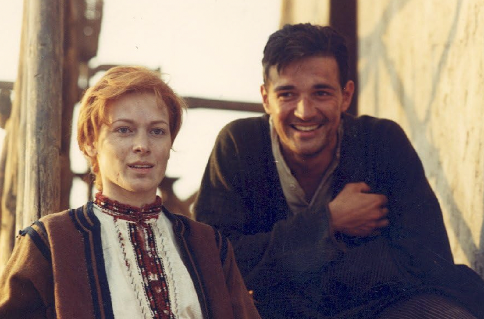

The Russian Spy Novel
- Boris Akunin is the major practitioner (the genre emerged after the end of communism and the rise of commerical print culture in the 1990s free Russia.
- Akunin sets his novels in the past (a hybride of historical and spy novel)
- Erast Fandorin is the major hero.
- Fandorin is the faithful servant of the Russian empire (conservative views, ironic about new ideas (feminism in Turkish Gambit)
- novels are set in the times of Alexander II (reformist tsar)
- Akunin borrows from the historical novel: chance encounter, use of foreign words (Turkish, Romanian, etc.) for the local color, hero in between two fighting camps
- Akunin uses main features of the spy novel: (1) hero making morally ambiguous things (gambling with human lives, for example) often intelligence officers, double agents, defectors, or informants; (2) Spy novels are usually tied to real geopolitical tensions, usually empires' rivalry; (3) passing as somebody else (cover professions, false identities); (4) McGuffin (finding the mole); (5) suspense and high stakes; (6) technology; (7) moral ambiguity; (8) exotic and/or strategic locations.

Fig.1. Erast Fandorin (a shot from Dzhanik Faiziev's adaptaion of Turkish Gambit (2005)

Fig.2. Varvara and Erast Fandorin (from a film Turkish Gambit (2005)).
Akunin likes to use playful references to other literary and cinematic works.
- In Turkish Gambit, captain Zurov is a reference to a character in Alexander Pushkin's Captain's Daughter.
- The Ottoman Empire as a setting is an homage to numerous spy novels set on the ruins of the Ottoman Empire (Coffin for Dimitrios, From Russia with Love etc.).
- Fandorin's last name is a reference to French Fantomas crime series from the early 20th century by writers Marcel Allain (1885–1969) and Pierre Souvestre (1874–1914) where one of the lead character's name is Fandor. Journalist Jerôme Fandor, is employed at the newspaper La Capitale.
Back